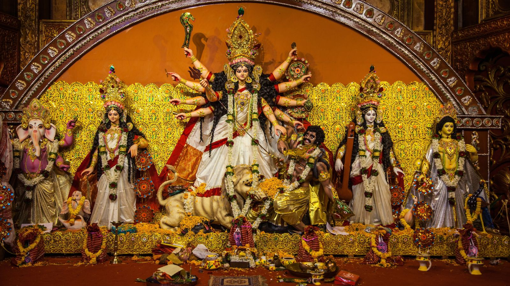
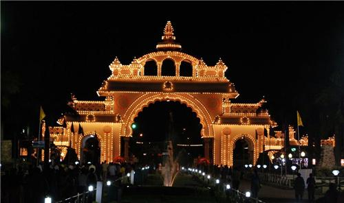
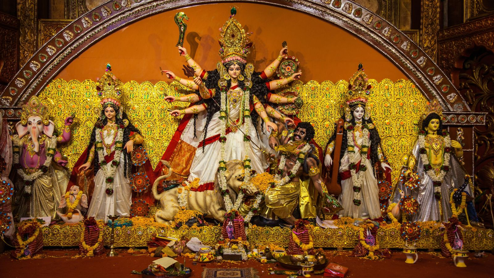
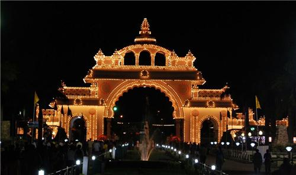

Introduction
Mysore Dussehra is a major festival of Karnataka which takes place in the city of mysore.
It celebrates the triumph of good over evil.The legend has it that the demon king Mahishasura
was slayed by Goddess Chamundeshwari or Durga on that day, Vijayadashami.It is a 10-day festival which starts with the navaratri or the nine days and end with Vijayadashami,
which marks the victory of goddess Durga.This festival generally falls in the months of September and October.
Origin
As per the Devi Bhagavata,Mysuru was ruled by the bufallo headed demon Mahishasura.
In response to the prayers of the gods and goddesses, the Goddess Parvathi, took birth as Chamundeshwari and killed
the monster on top of the hill,Chamundi near Mysore. Hence the hill and the city have the names Chamundi Hill and Mysore respectively.
After killing the monster, the Goddess stayed on top of the hill.
Festivities
The celebration starts with a special durbar(royal assembly) which is attended by the members of the royal family,guests,
officials and the population.The tradition of having a royal assembly was first started during the reign of Krishnaraja Wodeyar III.Ayudha pooja is performed by the royal king of Mysuru in the Chamundeshwari temple on top of the hill Chamundi.During this festival,
important buildings like the Mysuru palace is decorated with illuminating and bright lights. From 7pm to 10pm during Navaratri.
History
Mysore has a long history of celebrating Dussehra.The origin of this festival is unknown but historians believe
it started in the Vijaynagara empire around 15th century CE.This festival was one of the most important festivals of that time and was called Mahanavami.
After the fall of the Vijayanagara empire,The Wodeyars continued the tradition initially by Raja Wodeyar I and later by his succesors.Abdur Razzaq, a Persian ambassador,
reports the festival of Dasara during his stay in India, in his book Matla-us-Sadain wa Majma-ul-Bahrain(The Rise of the Two auspicious constellations and the Confluence of the Two Oceans).
Exibition and other programmes
The famed Mysore exhibition held during the Dasara was started by the Maharaja of Mysore, Chamaraja Wodeyar X, in 1880,
with the intention of introducing up-to-date innovations and developments to the people of Mysore.The task of holding the exhibition is now
entrusted to the Karnataka Exhibition Authority, which was constituted in 1981 to organize the exhibition. The task of conducting the Dasara exhibition was entirely
entrusted to the Karnataka Exhibition Authority from 1987.

 


